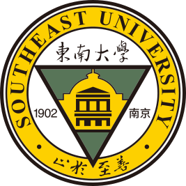
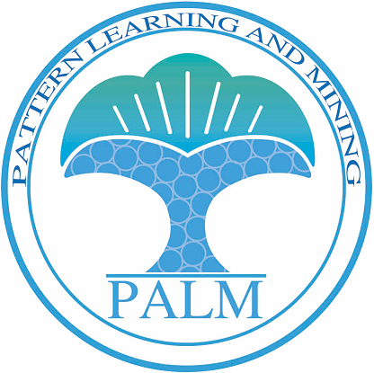

LIFT has been accepted to NeurIPS 2026.LIFT 已被 NeurIPS 2026 接收。
Ziyi Wang 王子怡
Reasoning, represented and transferred.理解推理，表征推理，迁移推理。
I am a master's student in the PALM Lab at Southeast University, advised by Prof. Xu Yang. My research interests lie in understanding the reasoning mechanisms of large language models and vision-language models.我是东南大学 PALM 实验室硕士研究生，导师为杨旭教授。我的研究兴趣主要在于理解大语言模型与视觉语言模型的推理机制。
Specifically, I study how reasoning is represented within these models and how such representations can be transferred across tasks and modalities through lightweight activation interventions.具体而言，我关注模型内部如何表征推理，以及如何通过轻量级激活干预，使这些表征能够跨任务、跨模态迁移。
My recent work on reasoning vectors appears at ICLR 2026 and NeurIPS 2026, both CCF-A conferences. I am always happy to discuss research and explore collaborations in language and multimodal reasoning.我近期关于推理向量的工作发表于 ICLR 2026 和 NeurIPS 2026，两者均为 CCF-A 会议。欢迎围绕语言与多模态推理开展学术交流与合作。

News最新动态
Education Experience教育经历

Southeast University东南大学
Master's Candidate · PALM Lab硕士研究生 · PALM 实验室
Research Experience研究经历

PALM Lab @ SEU
Master's Student硕士研究生
Reasoning Vectors推理向量
Language & multimodal models语言模型与多模态模型
Research Summary研究概览
I study how reasoning is represented inside generative models, and how those representations can be reused across tasks and modalities.我研究生成式模型内部如何表征推理，以及这些表征如何跨任务、跨模态复用。
CoT Vectors
We represent task-general, multi-step reasoning as compact vectors. Extracted and learnable variants transfer reasoning efficiently and reveal a layer-wise, three-stage organization inside LLMs.我们将任务通用的多步推理表征为紧凑向量。提取式与可学习式向量能够高效迁移推理能力，并揭示大模型内部具有层间差异的三阶段组织结构。
LIFT
We transfer linguistic Reasoning Vectors from a base LLM into its frozen vision-language counterpart. Evaluation across two VLMs and six benchmarks studies whether language-side reasoning survives multimodal scaling.我们将基础语言模型中的语言推理向量迁移到其冻结的视觉语言模型中，并在两个 VLM 与六个基准上研究语言侧推理在多模态扩展后能否继续发挥作用。
Selected Publications代表论文
2 CCF-A papers篇 CCF-A 论文
Google Scholar谷歌学术

Research & Collaboration研究交流与合作
I am open to research discussions and collaboration on reasoning mechanisms, activation intervention, and multimodal intelligence. The easiest way to reach me is by email.欢迎围绕推理机制、激活干预与多模态智能展开研究交流与合作。你可以通过邮件联系我。
2531131993@qq.com